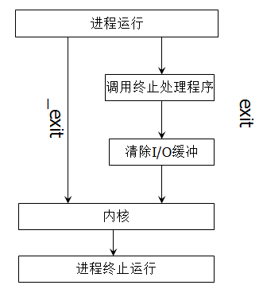

# 功能
- _exit () ：退出程序。
- exit（0）：运行正常退出程序；
- exit（1）：运行异常退出程序；
- return（）：返回函数，若在主函数中，则会退出函数并返回值。
# _exit () 和 exit () 区别
exit () 会将缓冲区的数据写完再结束进程到内核中去（退出进程会清理 I/O 缓冲区）。
_exit () 直接结束进程进入到内核中。
exit () 函数定义在 stdlib.h 中，_exit () 定义在 unistd.h 中。
图示：

示例：
_exit()
#include <stdio.h> | |
#include <unistd.h> | |
int main(void) { | |
printf("hello\n"); | |
printf("OK"); | |
_exit(0); | |
} |
输出结果：
hello |
exit()
#include <stdio.h> | |
#include <stdlib.h> | |
int main(void) { | |
printf("hello\n"); | |
printf("OK"); | |
exit(0); | |
} |
输出结果：
hello | |
OK |
原因：
printf 函数使用的是缓冲 I/O 的方式，该函数在遇到 \n 换行符时自动的从缓冲区中将记录读出。
exit () 将缓冲区的数据写完后才能退出来，所以调用 exit () 函数后程序并不会马上退出，会把 OK 也输出出来。
_exit () 是直接退出进入到内核中了。
# exit (0) 和 exit (1) 区别
- exit (0)：运行正常退出程序。
- exit (1)：运行异常退出程序，返回值 1 是返回给操作系统的。
# return 和 exit () 区别
- return 是关键字；exit () 是函数。
- return 是语言级别的，表示调用堆栈的返回；而 exit () 是系统调用级别的，表示进程的结束。
- return 是退出（返回）函数，将控制权移交给递归的前一级；exit () 是直接退出进程。
- 在最初调用的 main 函数中调用 return 和 exit 的现象很模糊，非主函数中调用 return 和 exit 效果很明显。